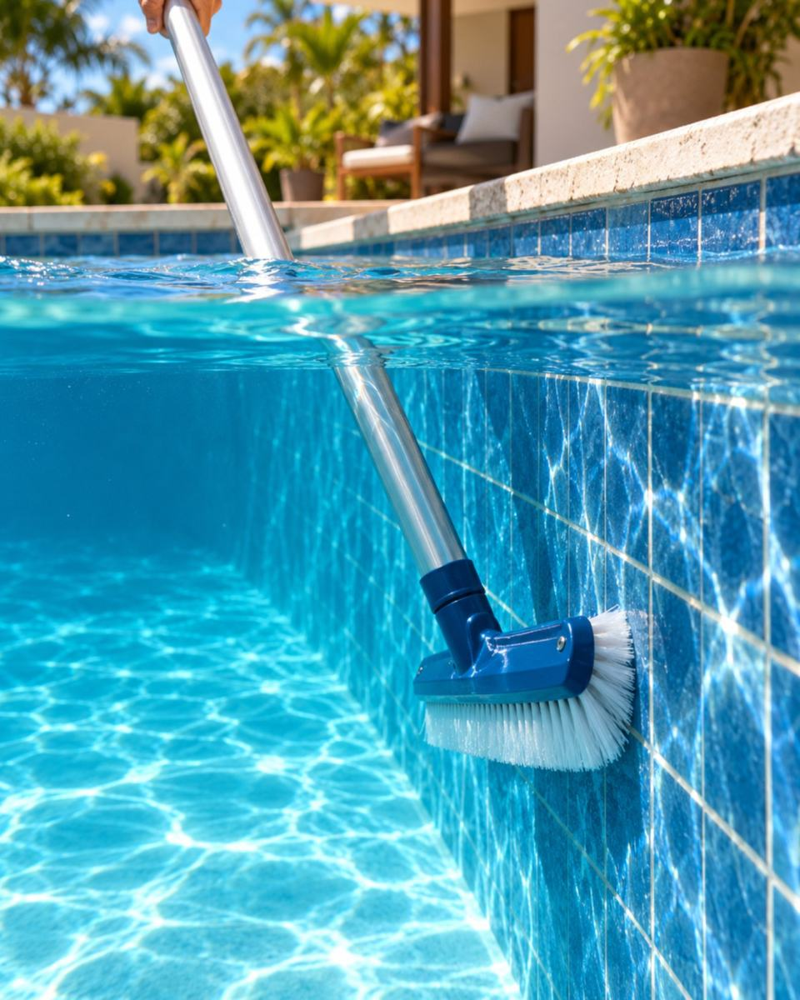
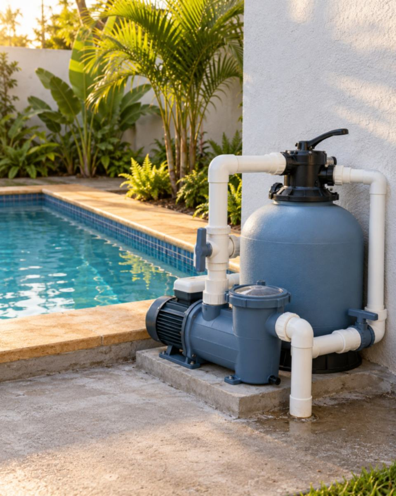
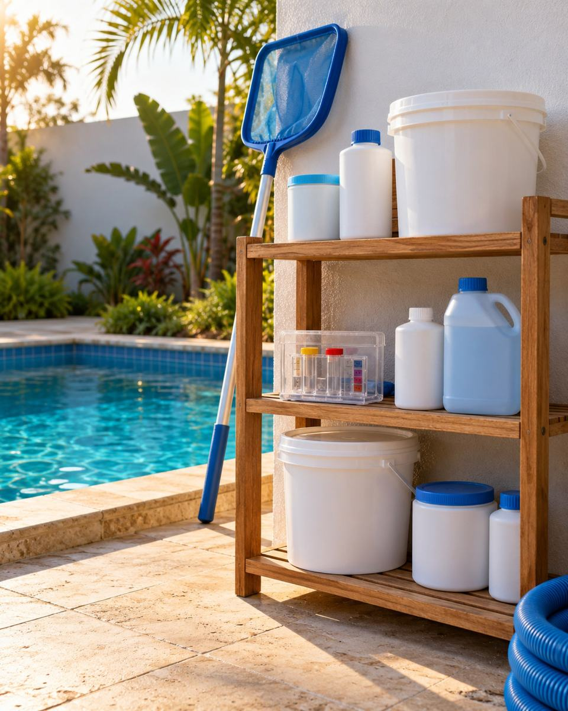
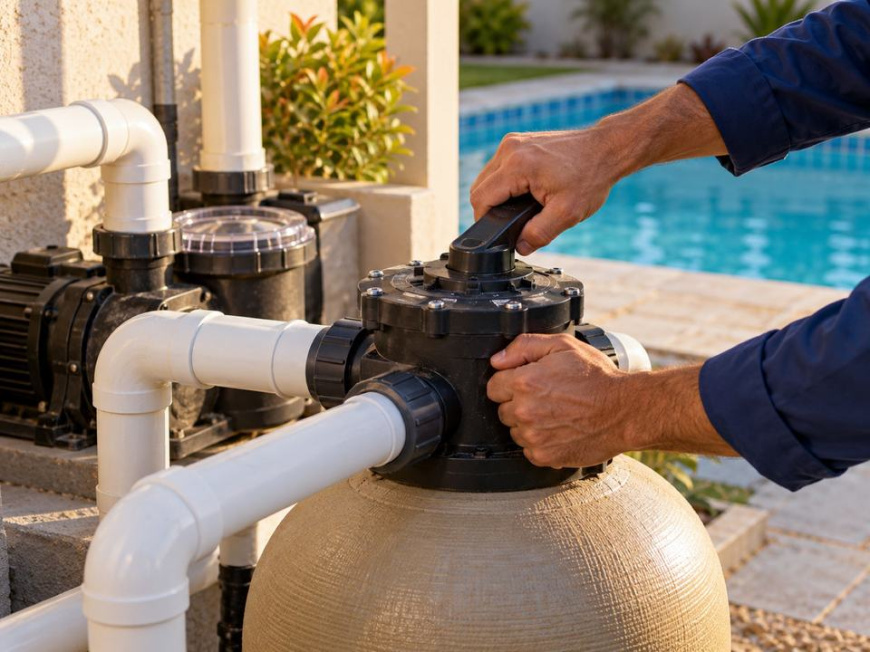
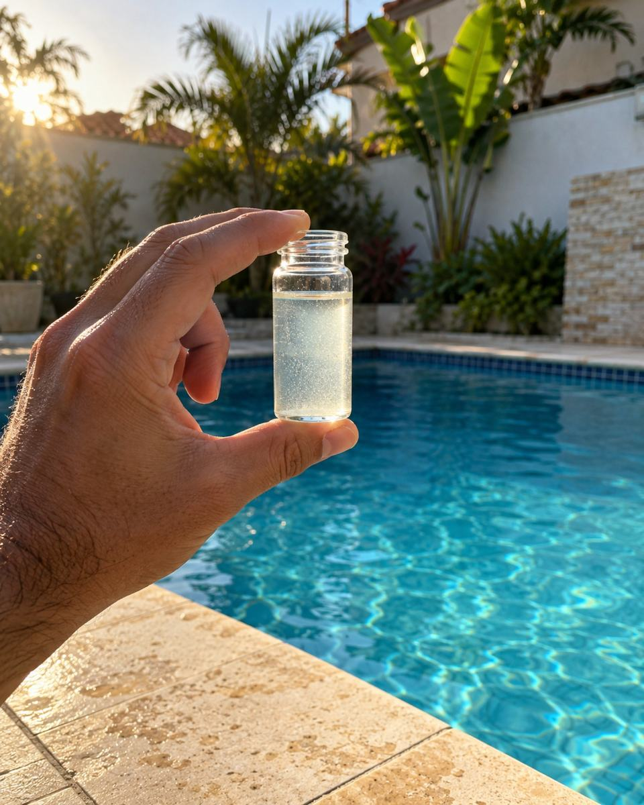

Limpeza · Equipamentos · Produtos · Grande Florianópolis
Sua piscina, sempre pronta.
Quem limpa a sua piscina também tem a peça e o cloro. É só pedir pelo WhatsApp.
Por onde começar / 01
Três jeitos de cuidar da sua piscina.

Serviço de piscina
01Limpeza da piscina e acerto da água, no plano ou numa visita só.
Ver serviços
Produtos para piscina
02A bomba que parou ou o filtro que não dá conta, das marcas que a gente confia.
Ver equipamentos
Produtos de limpeza
03Cloro, algicida, clarificante e o que mais a sua água precisa.
Ver produtos de limpezaUm só lugar / 02
Da limpeza à bomba, uma equipe só.
Quando a bomba faz barulho alto ou a água demora a clarear, você não precisa de uma loja e de outro técnico. Quem cuida da piscina já sabe o que ela tem.
E o produto de limpeza sai do mesmo lugar. Você pede pelo WhatsApp e a gente diz o que serve para a sua água.
- Mais de 10 anos no mercado
- Loja no Itacorubi, em Florianópolis
- Atende a Grande Florianópolis

Você só aproveita a água.
Como você acompanha / 03
Você vai saber que a gente esteve lá.
Depois de cada visita, chega no seu WhatsApp o que foi feito na sua piscina.
- Fotos da piscina do jeito que a gente deixou.
- Cada tarefa marcada, do fundo aspirado aos cestos.
- A leitura do pH e do cloro, com um aviso se algo pedir atenção.
PRECISA DE RESPOSTA DO VINI:
o relatório traz a leitura de pH e cloro e a lista do que foi feito (aspirado, escovado, cestos)? Se não, saem do texto e do exemplo.
Se você já pensou isso / 04
Cuidar da piscina não devia tomar o seu sábado.
“Fico correndo atrás de cloro todo sábado.”
O teste e o acerto da água entram em toda visita do plano.
“Nunca sei se o piscineiro veio de verdade.”
Cada visita gera um relatório com foto e data no seu WhatsApp.
“Toda manutenção vira surpresa na conta.”
Reparo é à parte do plano e só acontece depois que você aprova o orçamento por escrito.
Como funciona / 05
Três passos e a piscina é problema nosso.
- 01
Chame no WhatsApp.
Conte o tamanho da piscina e mande uma foto da água.
- 02
Visita de avaliação.
A gente olha a água e os equipamentos e manda o orçamento por escrito.
PRECISA DE RESPOSTA DO VINI:
existe visita de avaliação antes do orçamento? Ela é cobrada? Se não houver visita, o passo 2 vira “Orçamento pelo WhatsApp com as fotos”.
- 03
Dia fixo na agenda.
A equipe volta toda semana ou a cada quinze dias, sem você marcar de novo.
Trabalhos recentes / 06
Antes e depois, piscina por piscina.
- Foto piscina antes e depois
- Foto piscina antes e depois
- Foto piscina antes e depois
- Foto piscina antes e depois

O que a sua água está dizendo / 07
Comece pelo que você está vendo.
A causa mais comum de cada sinal e o que entra no tratamento.
Água turva
A sujeira fina está passando pelo filtro. Pede filtro em dia e clarificante.
Ver o que usarCheiro forte de cloro
Costuma ser cloro gasto, não cloro demais. Olhos ardendo vêm da mesma causa.
Ver o que usarParedes escorregadias
É o começo do limo. Escova e algicida antes que a água mude de cor.
Ver o que usarMarcas / 08
Equipamento e produto aqui vêm das marcas que a gente confia.
Equipamento Sodramar, Jacuzzi, Komeco e Brustec. Químicos HTH, Genco, Suall e Buschle & Lepper.
Onde fica
A loja fica no Itacorubi.
Rua Vila Ivan Matos, 38Itacorubi, Florianópolis – SC, 88030-010
- Segunda a sexta, das 9h às 18h · Sábado, das 9h às 12h
- WhatsApp e telefone (48) 3334-0055
- Atende a Grande Florianópolis
Dúvidas / 09
Antes de chamar.
Se a sua dúvida não estiver aqui, pergunte no WhatsApp.
Perguntar no WhatsAppVocês atendem o meu bairro?
A gente atende a Grande Florianópolis. Mande o endereço no WhatsApp que a gente confirma.
Por que não tem preço no site?
Porque o valor depende da piscina: tamanho, estado da água e o que ela precisa. O orçamento vem na conversa, antes de qualquer serviço.
Preciso ter o plano para comprar produto ou peça?
Não. Você pode pedir só o produto de limpeza ou só o equipamento, pelo WhatsApp ou na loja do Itacorubi.
Vocês instalam o equipamento que vendem?
PRECISA DE RESPOSTA DO VINI:
vocês instalam o que vendem? (A) sim, (B) só vendem, (C) depende do produto.
Os produtos de limpeza são entregues?
PRECISA DE RESPOSTA DO VINI:
vocês entregam os produtos de limpeza ou é só retirada na loja?
Um recado da Vavá
Vavá Piscinas“A piscina é para você usar. Cuidar dela é com a gente.”